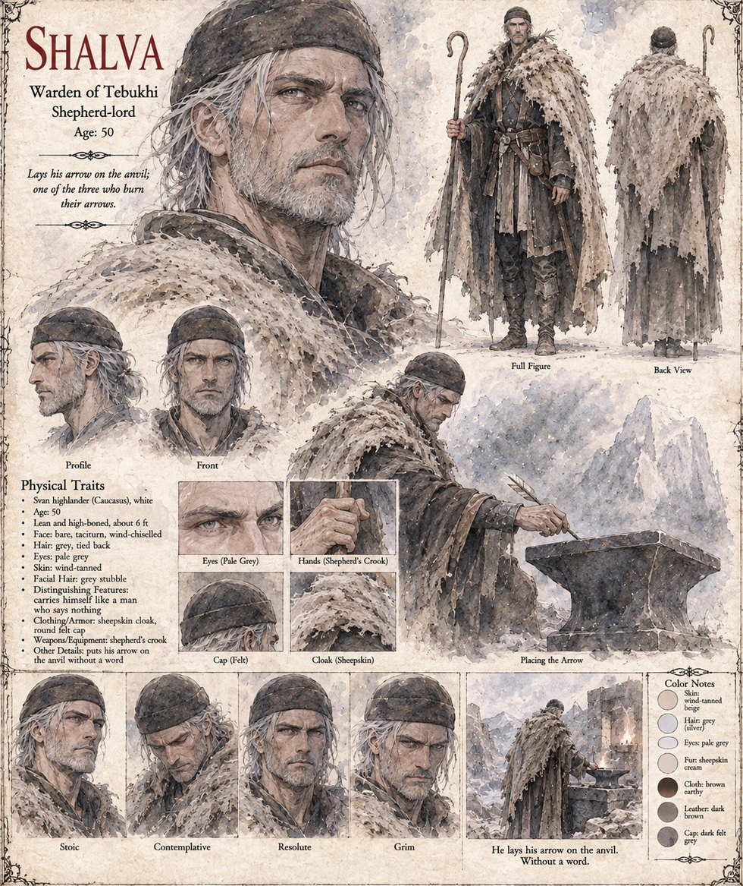

Shalva
Warden of Tebukhi, the high bare valley of sheep · shepherd-lord · 50
Warden of Tebukhi, high and bare and full of sheep, a valley of the Son, and its shepherd-lord, fifty, high and bare and taciturn like it. The manuscript gives him one reason, and gives it in a sentence: he had never in his life understood why a man would ask a god for what his sheep could find on their own.
In the dark of Garren in the thirtieth year he meets Levan of Kharzeni and Archil of Zemoli at midnight in the forge at Kharzeni, with an arrow in the colours of the Son under his coat. They were not friends. When Archil has given his reason, Shalva said nothing, and put his arrow on the anvil. It is the whole of his part in the night, and the sheet prints it as its scene; the arrows take seven hours to burn, and nobody keeps the ash. He is one of the three Wardens whom Gurgen has hanged in the Hall of Oaths on the first of Havren, under the Father’s justice, for the breach of an oath, while the king, who had declined to hang them, is in the field at the head of an army.
The manuscript gives his age of fifty, his valley, his silence, the anvil and the hanging. The sheet’s lean, high-boned build of about 6 ft, bare, wind-chiselled face, grey hair tied back, pale grey eyes, wind-tanned skin and grey stubble, sheepskin cloak, round felt cap and shepherd’s crook are its own, as are its panels Stoic, Contemplative, Resolute and Grim. Its scene, He lays his arrow on the anvil. Without a word., is the sheet’s own condensation of the manuscript’s sentence.
“why a man would ask a god for what his sheep could find on their own”
Appears In

Related Subjects


Related Records

At midnight in the month of Garren, in the thirtieth year, Levan of Kharzeni, Shalva of Tebukhi and Archil of Zemoli put three arrows to the fire of the forge at Kharzeni: “Let it be the one thing in this valley,” says Levan, “that was never asked for anything.” They will not burn for hours; it takes the best bellows in Vashkeni and the seven hours until dawn, and the seeds in the nocks go out without a flare, the way a lamp goes out when someone has simply closed the door of the room.